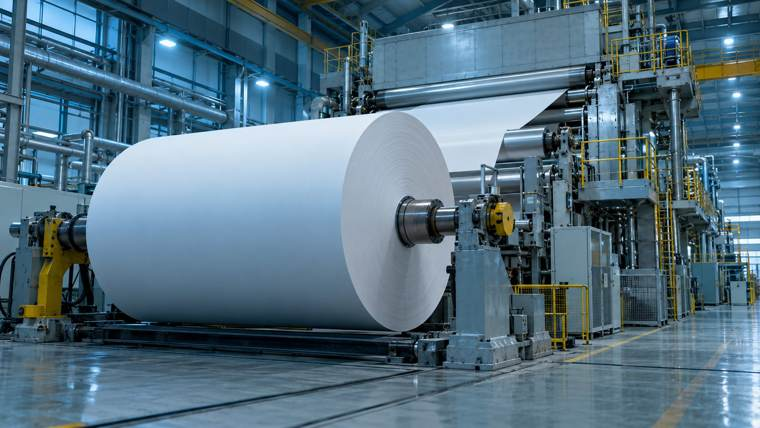
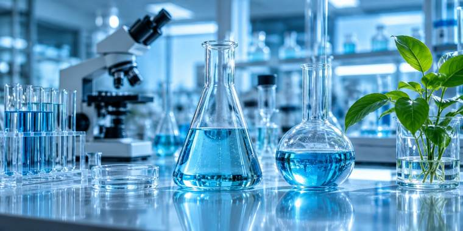

Case 01Manufacturing
사례 자세히 보기 →
Manufacturing
Excellence
생산체계 구축과 원가혁신
11만톤 생산체계 구축
공정 개선 및 품질 혁신
에너지·원가 절감
연간 15.1억원 절감

신소재 개발부터 양산(Scale-up), 설비·공정·원가·조달·인허가·물류·ERP/MES·시운전까지 전 과정을 아우르며 지속 가능한 사업화를 추진합니다.
현재 수행 업무 자세히 보기 →
생산체계 구축과 원가혁신

연구를 양산 사업으로 연결
AI로 바꾸는 업무 방식